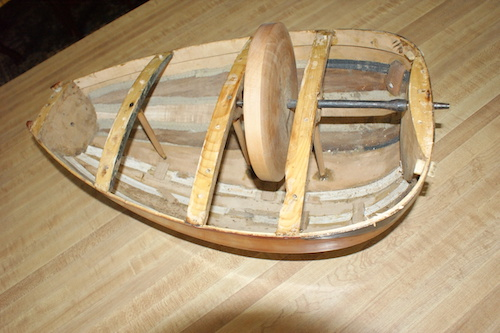

When the crank is turned, the wheel rotates inside the body and rubs the strings. The wheel is usually of pearwood and coated with resin. Historically, pear wood has often been used to make instruments. Clarinets, oboes, recorders, and other instruments have been made out of this wood, which is strong and easy to work. Instruments require precise carving, and working with a wood, such as pear, that will not crack easily when drilled, helps instrument makers make changes to the wood without breaking it.
The wheel is coated with resin, just as the bow of a violin. By coating the Wheel with the pine resin, the friction between the strings and the wheel is increased, resulting in a richer sound.

https://www.aboutmechanics.com/what-is-pear-wood.htm